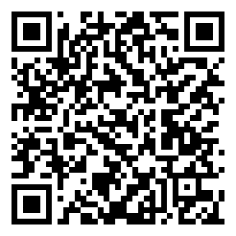
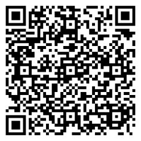

Estructura de informes y documentos técnicos
El informe es mucho más que un documento: es la llave para comunicar ideas, descubrimientos y proyectos con claridad, orden y precisión. En el mundo actual, donde la tecnología y la innovación avanzan a pasos agigantados, los grandes profesionales de la informática, la ingeniería y la inteligencia artificial utilizan esta herramienta para presentar resultados, proponer soluciones y compartir avances que transforman la sociedad.
💡 Recuerda: En esta unidad, no solo aprenderemos qué es un informe, sus tipos y su estructura, sino que desarrollaremos habilidades de investigación, análisis y redacción técnica, tal como lo hacen expertos en empresas y laboratorios de alto nivel.
Objetivos de aprendizaje
- 🎯 Comprender el concepto, propósito y utilidad del informe como herramienta de comunicación técnica y académica, reconociendo su importancia en la presentación de datos, análisis y conclusiones de manera clara y objetiva.
- 🎯 Identificar y diferenciar los principales tipos de informes, comprendiendo sus características y contextos de aplicación en ámbitos escolares, profesionales y tecnológicos.
- 🎯 Dominar la estructura básica de un informe (portada, introducción, desarrollo, conclusiones y anexos) y aplicar correctamente el uso de conectores para garantizar coherencia y fluidez en el texto.
- 🎯 Desarrollar habilidades de investigación, análisis y redacción técnica para elaborar informes que integren datos, gráficos, tablas y ejemplos prácticos relacionados con la tecnología y la inteligencia artificial.
- 🎯 Fomentar el pensamiento crítico y la comunicación clara al elaborar informes que presenten ventajas, desventajas, recomendaciones y conclusiones fundamentadas sobre temas relevantes en el ámbito tecnológico y educativo.
Actividades prácticas
Ejercicio 1: Tipos de informes
Si estás realizando una investigación académica, ¿cuál sería el tipo de informe más acorde?
Ejercicio 2: Uso de conectores
En el fragmento del documento técnico, ¿cuál sería el conector más adecuado para iniciar la descripción?
Ejercicio 3: Estructura de informes
¿cuál de los siguientes elementos forma parte del esquema de un informe?
Evaluación
Comprueba lo que has aprendido. Selecciona la respuesta correcta para cada pregunta.
Recursos para profundizar
Para ampliar tu conocimiento te recomendamos explorar los siguientes enlaces y documentos:
-
Estructura de un informe
Ir al recurso -
Quiz documentos técnicos
Ir al recurso